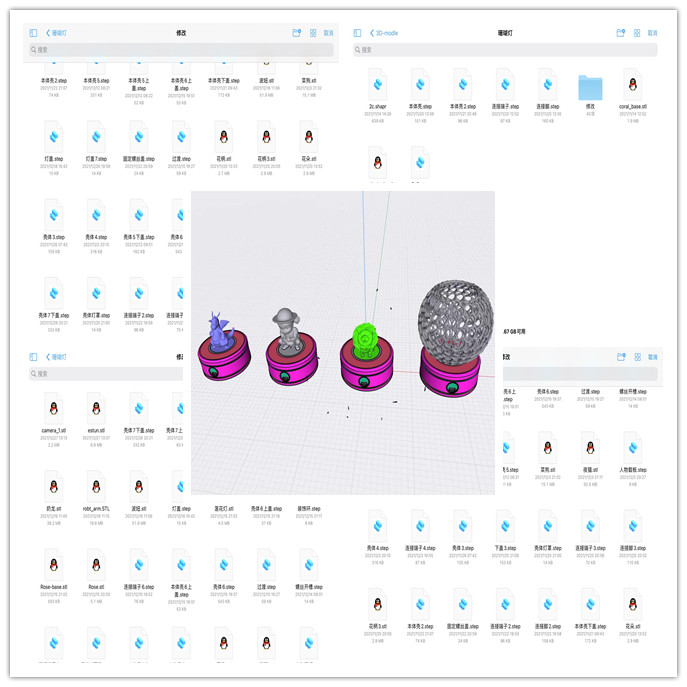
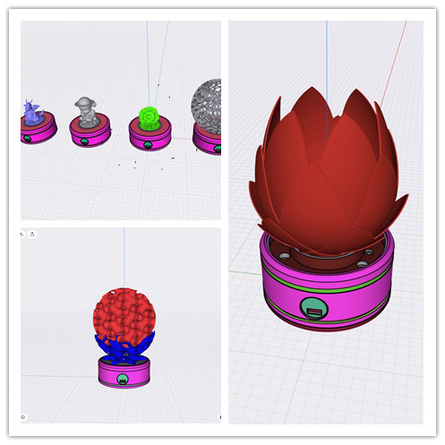
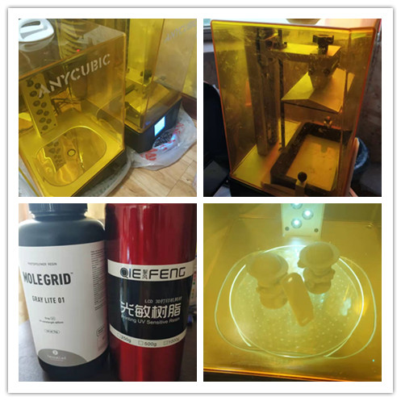
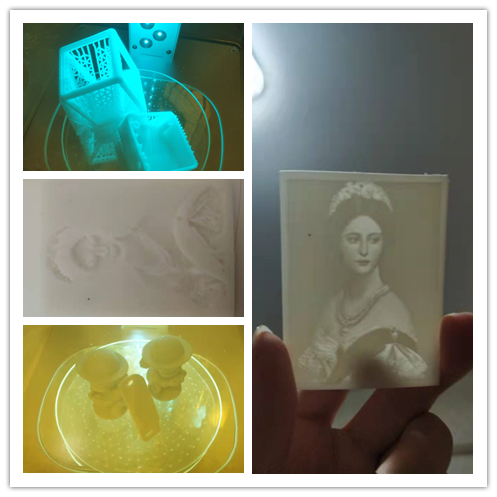
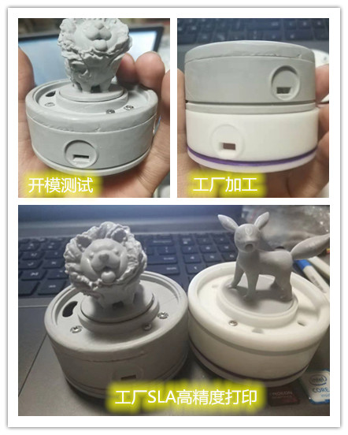
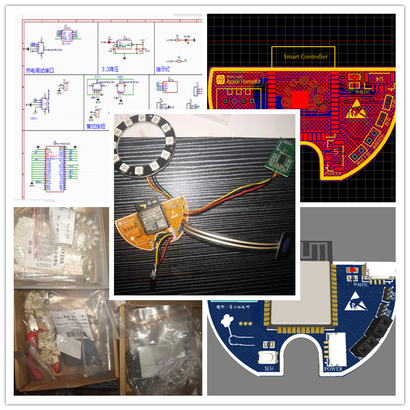
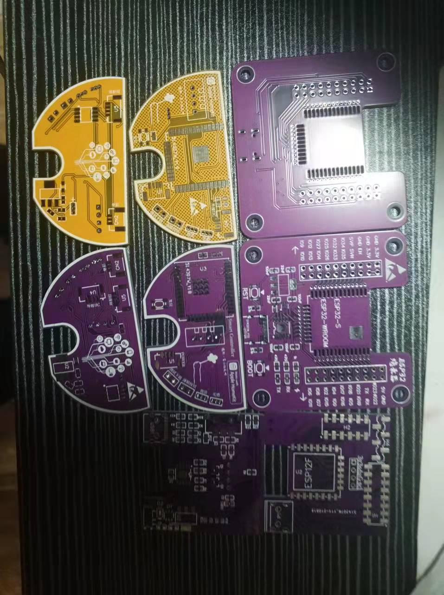
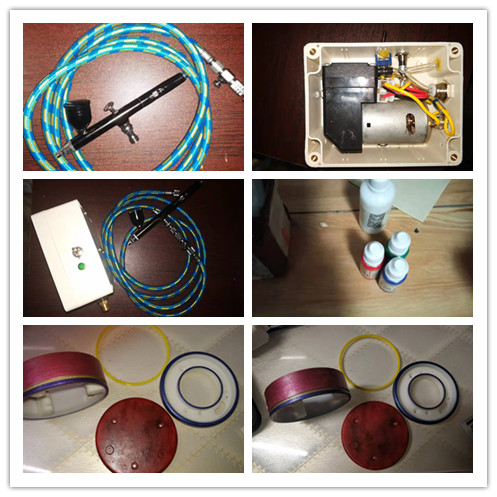
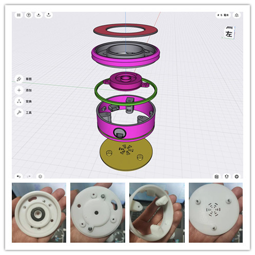

从相知开始
嗨！见字如晤，如果没有意外第一次读到这篇博客的人应该就是当事人本人呢吧。哈哈哈，原谅我以这种方式来表达。（
当然为了避免被无聊的网友捣乱，博文也进行了加密，前端加密挡不了100%的人，但90%的普通人还是可以的（路过大佬高抬贵手）。）是不是感觉有点酷，好了，回到正文，其实几个月之前就想约你出来，自从国庆开始工作上的事就都很忙，我呢个人的事也忙个不断，也因为本来就在筹划一个特别的小礼物，断断续续在做一直没弄完，前前后后改了很多版，要么设计不合适要么装配部合适、要么电路不合适，我也很无语。。。硬件设计重来都很波折，还好终于能赶在年前弄完，也是幸事。猜到你可能不解，疑惑为啥非要准备这些。其实我猜你能感受到后半年，我的态度貌似有很大转变，让我观点有很大转变源于你开始真正接手工作上的事务开始，也正是半年前。那就说说以前的你和现在的你在我眼里有什么不同吧。从刚参加工作那段时间说起，我第一次见你的时候，其实没啥波澜，长的好看又搞编程的姑娘见多了就觉得普通，以前去参加比赛，总会遇到队伍里有一两个姑娘，见怪不怪。百度开发者大会，长大好看的姑娘更是很多(我前任就是前百度的运营，会前打电话发邀请函时认识的，当然话说至此无意提她…)，所以真正能让我认可的还真不容易，哈哈哈，没办法自己又菜眼光又高。我这个人其实内心是很自卑，但是谈到技术或许自信很多。吃了些苦，有一些经历，也有些故事，但我不善于交际，可能社交场合更容易自卑吧。接着说，20年开始搞移动显示器项目，我记得那会其实你是根据上层意愿配合写控制算法Matlab转C++? 这凸显不出实力，那时候项目压根没走上正轨，决策和方向上都有问题其实很多人不看好那个项目，所以不建功。21年做磁材打磨，见证了新松视觉从无到有，说实话，我之前接触一点视觉，我没有参与那个项目，可能是对项目了解不够？我承认我不会，但那只是时间问题，其次就是愿不愿意去学（哈哈哈，能感觉到我的自信了没），真的这是我一直以来的理念，技术难度花时间可以学，可以攻克，只是时间问题（算法除外，一说算法就有点虚，没人带瞎搞花时间也难入门）。21后半年酒厂这个，视觉更深入的东西其实还很多，这年项目接着一个个，一直在搞底层开发，不清楚自我提升有多大，当然不否定在此作出的努力，我可能更看重自我提升，不知有没有同感，因为我也是这样，也在说我自己。如果仅是如此的话或许我们各自忙自己的事，个人把工作和生活分的很清，工作之外很难再有交集。记得之前聊过在团队建设项目管理上貌似有许多共同话题，我之前也带团队，有一些自己的见解【现在有些线上的订单也是团队再接，虽然都是志同道合（或者臭味相投爱怎么说也行，哈哈哈）的一群人，或是生活所迫/合作共赢，只为一起挣钱，一直以来起主导地位，不过自从生病，我不接手开始，也渐渐散了现在也没几个人一起搞了】，或者换句话来说，也是这时候才真正开始认识你吧，没有上层直接约束，可以放手去干也避免了无用的投入，单从项目管理上可以算是明主了，以前太拘谨，别人一手遮天凸显不出你的能力。这是我的看法，当然我也屈居于下，领导开心我随意，但我自己团队我肯定不能够，没有利益牵扯我就得对人负责，否则又有谁愿意拥护你和你一起干呢；
后半年其实也是你最忙的半年，也是我态度转变关键，真的，我们真的太像了，我能在你身上看到我的影子，加班，出差，改方案，我之前也是异地来回跑早出晚归，我可以堂而皇之的说为了赚钱，为了学习，为了实践，但无论如何永远掩盖不住对自己擅长领域的热爱，单从做事时专注度就能看出来，细节不易被掩盖。不知道有没有说道你心坎，假如我说错了那就hahaha… 我反正看人挺准的。有同样经历的人或许会有同感吧，看到下班累的趴在桌上小憩，我承认心软了。所以在工作上我尽力分担，当然权利有限能够帮到忙也微乎其微吧，好在还有点影响力，大家都比较尊重配合。也是受你影响，在那段比较emo的日子里，摆脱心里束缚，重新接手联络线上团队，也有些起色（前半年收入几乎没有，后半年这几个月，虽然就我们几人，总收入已经破4w了，我自己也拿到1w8的收入，在努力半个月或许能破2w了）,
我们每个人处于不同际遇，面对的遭遇不同，很难通过语言去改变一个人思想，真正感同身受其实是伪命题，但人影响环境环境影响人是潜移默化的，或许你觉得“ 哎？我啥也没做呀 ”，看惯了大城市灯红酒绿，又岂会注意山村黑夜里的烛光。内心环境不同罢了，烛光我也满足。正如此才能发现你的特别,不是吗? 或许周围还有你我一样的人，但相识相知都需要一个契机。我喜欢和志同道合，三观相符、正能量的人待一起，这类人可遇不可求，但遇到了我不想错过。能看到这篇博文的话（输错密码除外哈，我肯定凑不要脸想方设法加链接加跳转引导到此），那说明我的世界大门向你敞开，你我已算旧识，那一切从相知开始吧….
花絮

从十一月份就开始陆陆续续绘图，每个零部件改了平均有7-8个版本，中间文件由几十个之多，记不太清了，这次没有用SW绘图，而是在Ipad上用，shapr3D及时绘图来做的，省了测量草图绘制的时间。

建模其实得到了三个大版本，原本上层是想做成珊瑚灯的，数模做成后，我自己去试着打印很难成型，原因是光固化LCD，DLP成型技术需要有支撑，珊瑚灯成型后内部支撑没法拆掉，发工厂工厂说也做不了，除非打印成不锈钢的….无语了(其实FDM打印也行，就是展厅那种，但是成型表面粗糙，看不上眼)，半个月白费，莲花灯罩是珊瑚灯继珊瑚灯后第二个方案，一开始都还挺顺利，但是开模测试过程中发现这个壁厚大于太厚透光不好，太薄成型不好（刚性树脂出来比较脆，和糖一下掉地上就碎【不是裂，是碎】），无奈又pass了，最后选择上面放成手办或玩偶，整体感觉比前面方案效果都好。

我自己的光固化打印机，趁双十一买了两瓶树脂，测试开模用来验证数模没问题，再发工厂SLA高精度加工。

小东西打的话性能还算够用，主要和树脂参数有关系，调的好坏真得自己摸索，我现在也没搞懂，反正参数就是凭感觉瞎蒙。

灰色是开模测试我自己打的，白色是工厂SLA出来的效果，差别很明显吧。

12月初才开始设计电路，加工PCB，写测试代码。那段时间工作上也贼忙，回来还得搞这个，出差那次急着回来也有其一部分原因，原本计划是你生日或者圣诞时候完结，但是没办法，生日礼物直接变新年礼物了，哈哈哈。我尽力了。

PCB一开始为了省劲，网上找的原理图，大概看了一眼，没细看就一股脑的布局，设计，布线了，等回来焊接测试一直找不到问题，返回来查原理图，发现系统电路有问题，我也是服了。有问题电路还分享出来害人。TMD…气人。

原来是计划在表面上色的，自己有材料做了个气源，喷笔和油漆是网上买的，实际喷涂发现气源气压不够，我是拿负压泵改的正压气源，气压不够导致喷笔雾化效果不好，油漆颗粒散不了，直接翻车….其实不上色也挺好的对吧。

最后，附一张数模结构图，SLA加工实物图。效果还不错。
————————————————————————————————————
使用说明，会在另一篇博文描述，这个只有你能看到。
评论